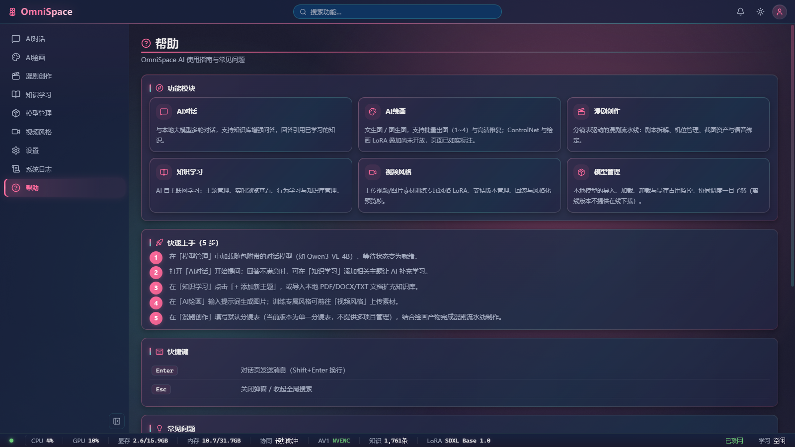
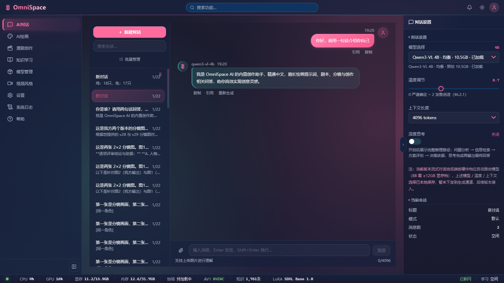
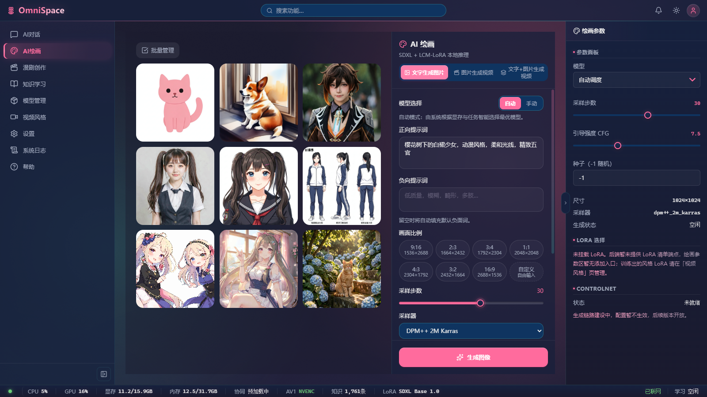
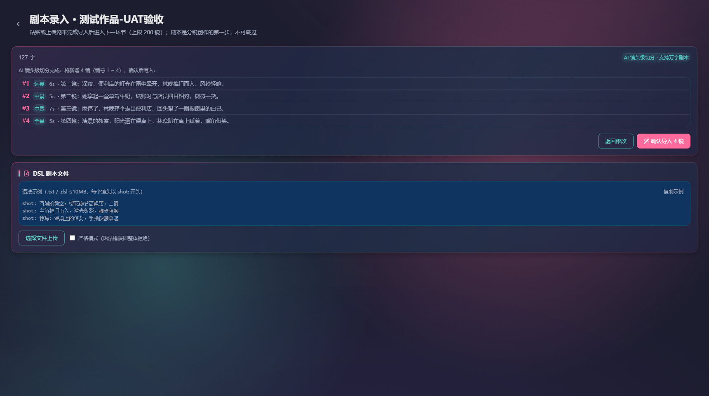
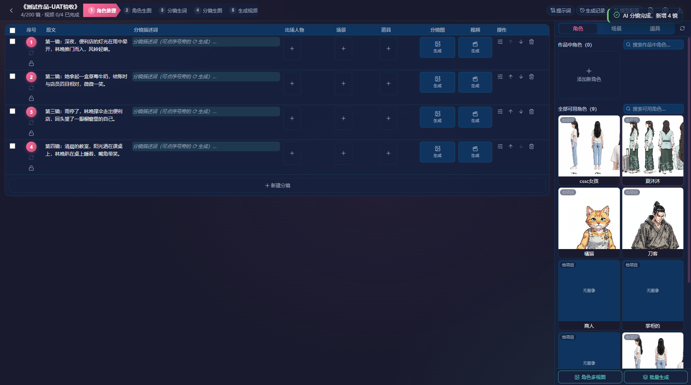
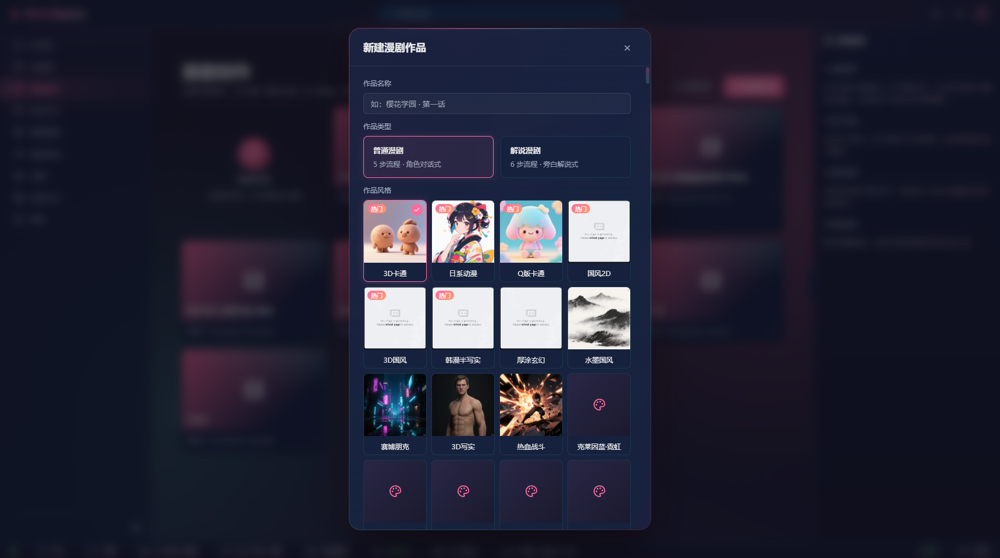
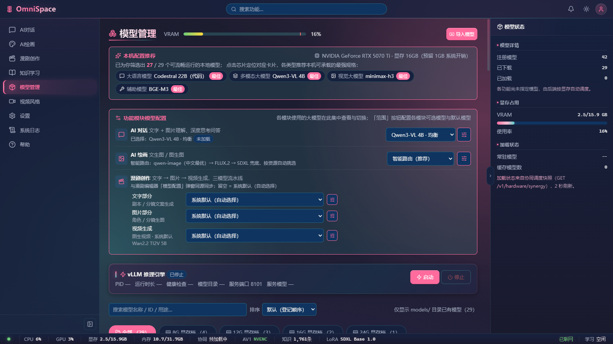
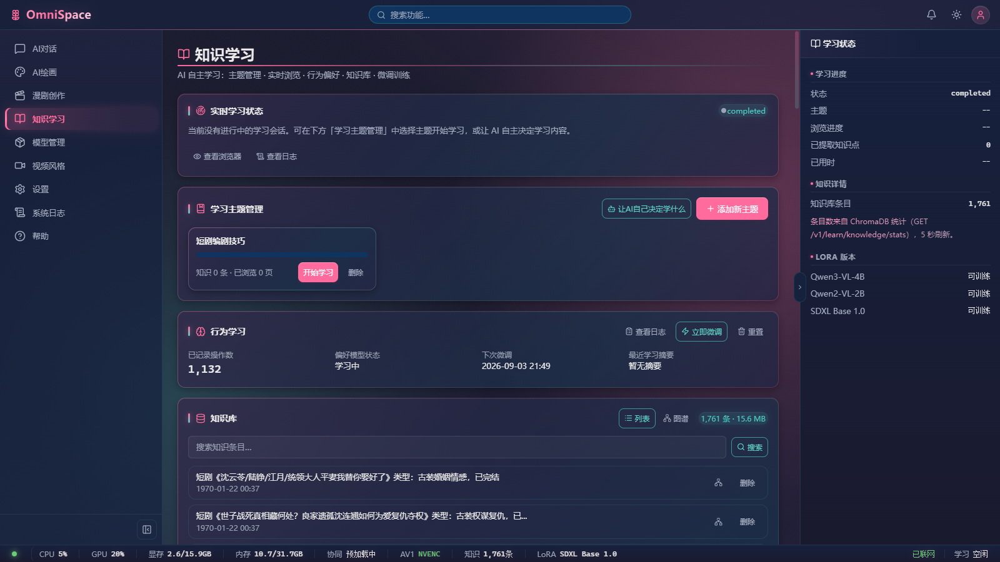

| 角色 | 画像 | 核心诉求 | 操作路径（摘要） |
|---|---|---|---|
| A · 林晓 | 25 岁普通用户，会用微信/小红书，AI 好奇但不懂技术 | 看懂产品、找到入口 | 首次打开 → 逐个点导航 9 页 → 看帮助是否够上手 → 试主题切换 |
| B · 阿哲 | 日常对话用户，用 AI 聊天与写文案 | 流畅多轮对话 | 发「你好，请用一句话介绍你自己」→ 等流式回复 → 第二轮测上下文记忆 → 新建对话 → 查历史保留 |
| C · 小满 | 插画师，有 SD 使用经验 | 提示词出图、参数可控 | 进绘画页 → 中文提示词 → 选比例 9:16 → 点生成 → 观察 87 秒全程反馈 → 找结果图 |
| D · 老周 | 短剧创作者，漫剧生产核心用户 | 剧本 → 分镜 → 图 → 视频 | 新建作品（选风格）→ 粘贴 4 镜剧本 → AI 切分 → 确认导入 → 分镜表 → 批量生词（无资产）→ 行级生成 |
| E · 雯姐 | 技术型用户，负责配置与维护 | 模型/引擎/学习可管可控 | 模型管理（看 vLLM/推荐/加载）→ 学习页 → 风格页 → 日志 → 帮助 → 设置（四主题） |
| 指标 | 实测值 | 参照基准 | 评价 |
|---|---|---|---|
| 前端首屏加载（#/chat） | 2,568 ms | — | 可接受 |
| 对话首字响应（空会话自动建会话+首 token） | 2,017 ms | 基线实测 461 ms（CLAUDE.md） | 偏慢 |
| 对话一轮总耗时（一句话自我介绍） | 23 s（第二轮 27 s） | — | 偏慢 |
| 绘画生成（30 步） | 87 s | SDXL 768² 20 步 13.6 s 基线 | 一般 |
| AI 切分分镜 · 冷启动（含模型加载） | 242 s | — | 过慢 |
| AI 切分分镜 · 热启动（模型已驻留） | 18 s | — | 达标 |
| 前端工程质量（六页面 console 错误 / 失败请求） | 0 / 0 | — | 优秀 |
| 编号 | 严重度 | 模块 | 问题 | 发现角色 |
|---|---|---|---|---|
| P0-1 | P0 | AI绘画 | 生成全程零进度反馈：87 秒内按钮状态、进度条、加载动画、「生成状态」字段全部无变化（恒显「空闲」），用户无从判断是否卡死 | C |
| P0-2 | P0 | 漫剧·剧本 | AI 切分冷启动 242 秒零进度反馈：全程仅静态标签文案「AI 镜头级切分 · 支持万字剧本」，无模型加载进度、无预计时间 | D |
| P0-3 | P0 | 知识学习 | 知识库条目时间戳显示 1970-01-22（Unix epoch 偏移 bug），1761 条全部异常 | E |
| P0-4 | P0 | 全局 | 开发测试数据残留直达用户：对话历史含「鸡：18只，兔：17只」等测试对话；作品列表含 E2E-R1/R2/R3、123456789、1113 等测试作品；角色库含 cssc女孩、无名称「他项目」角色 | A/D |
| P1-1 | P1 | AI对话 | 右侧设置面板的模型/温度/上下文配置「已本地保存，暂未下发到生成通道」——提供不生效的配置项，违反直觉（虽有小字说明） | B |
| P1-2 | P1 | AI绘画 | 生成完成无任何提示：无 toast、新图无高亮/「新」标记，第 8 张混入 9 图历史网格，用户需自行扫图辨认 | C |
| P1-3 | P1 | AI绘画 | 副标题文案「SDXL + LCM-LoRA 本地推理」与实际路由模型（FLUX.2 Klein / Qwen-Image）不符，状态栏 LoRA 显示 SDXL Base 1.0 | C |
| P1-4 | P1 | AI绘画 | 比例选择 9:16（1536×2688）与参数面板「尺寸 1024×1024」矛盾显示，两处尺寸口径不一致 | C |
| P1-5 | P1 | 漫剧·作品 | 「创建并进入」按钮点击后停留在作品列表页，未进入工作区，需再点一次作品卡片——按钮承诺与行为不符 | D |
| P1-6 | P1 | 帮助 | 快速上手第 5 步称漫画创作为「填写默认分镜表（单分镜版本，不支持多项目管理）」——与实际多项目列表/新建作品/AI 切分流程严重不符，帮助文档过时 | A/E |
| P1-7 | P1 | 模型管理 | 推荐模型与模块白名单矛盾：推荐「Codestral 22B（代码）·最佳」但对话槽白名单仅 qwen3-vl-4b/8b；漫剧视频默认显示「Wan2.1 T2V 5B」但视频槽仅 minimax-h3 | E |
| P1-8 | P1 | AI对话 | 单轮响应 23~27 秒（一句话任务），日常对话体感偏慢；首字 2 秒后长时间无「正在生成」类反馈 | B |
| P1-9 | P1 | 知识学习 | 学习主题「短剧编剧技巧」显示 0 知识 / 0 页，但知识库 1761 条且内容全部为短剧类——主题与知识条目关联断裂 | E |
| P2-1 | P2 | 漫剧·作品 | 新建作品风格网格出现两个风格同时带粉色对勾（3D卡通 + 日系动漫），疑似多选状态渲染 bug | D |
| P2-2 | P2 | 漫剧·资产 | 角色库「刀客」（古风男性人物）标签误标为「动物」 | D |
| P2-3 | P2 | AI绘画 | ControlNet 显示「未就绪：生成链路建设中，配置暂不生效」——未完成功能直接暴露在正式界面 | C |
| P2-4 | P2 | AI绘画 | LoRA 选择显示「未挂载（后端未提供）」，功能入口空转 | C |
| P2-5 | P2 | AI对话 | 空状态引导（「开始一段新对话吧」）与历史会话列表同屏显示，状态逻辑混乱 | A |
| P2-6 | P2 | AI对话 | 用户消息操作按钮在气泡上方、AI 消息在气泡下方，同类操作位置不统一 | B |
| P2-7 | P2 | 漫剧·切分 | 切分结果「景别」列填「夜景」（光线概念当景别用），正确景别应为远景/中景/特写 | D |
| P2-8 | P2 | 漫剧·分镜 | 行级「生成」按钮实际行为是选中该镜并打开右侧详情面板，并非直接生成——语义歧义 | D |
| P2-9 | P2 | 设置 | 全局设置直接暴露英文键名（theme / font_size / auto_model_select / default_video_codec），无中文标签 | E |
| P2-10 | P2 | 模型管理 | 右侧「已下载：—」统计为空，但实际已有模型加载运行；「常驻模型 —」与「缓存模型数 8」语义难懂 | E |
| P2-11 | P2 | 知识学习 | 实时学习状态标签显示「completed」但提示「当前没有进行中的学习会话」——状态语义自相矛盾 | E |
| P2-12 | P2 | 漫剧·作品 | 风格网格第 4 行 4 个占位格仅显示粉色圆图标，无「即将上线」等任何说明 | D |
| P2-13 | P2 | 漫剧·分镜 | 进度显示「4/200 镜」——200 为系统上限而非本项目镜数，易被误读为项目规模 | D |
| P2-14 | P2 | AI对话 | 温度滑块旁标注「(6:2:1)」为规格文档编号引用，直接暴露给终端用户无意义 | A |
| P2-15 | P2 | 全局 | 多个纯图标按钮无可读文本/aria-label（DOM 中呈现为空 BUTTON），可访问性与自动化识别差 | C/D |
| P3-1 | P3 | 全局 | 底部状态栏 10+ 项指标同排展示（CPU/GPU/显存/内存/协同/AV1/知识/LoRA/联网/学习），信息密度过高 | A |
| P3-2 | P3 | AI对话 | 模型 ID「qwen3-vl-4b」直接作为消息署名暴露给普通用户，宜用产品名 | B |
| P3-3 | P3 | AI对话 | 空状态中央文案与粉色「新建对话」按钮视觉权重争夺，主行动点不突出 | A |
整体视觉是统一的深色樱粉科技风，导航九大模块清晰可辨，三栏布局信息架构成熟，新手能快速建立功能地图。但多处细节暴露「开发中产品」的痕迹，让林晓这类用户对产品可信度产生怀疑。

导航跳转全部正常；设置页四主题（Sakura·夜樱/拂晓、Nebula·深空/晨辉）与字号切换可点选；帮助页模块卡片覆盖 6 大功能；底部状态栏实时刷新。
对话功能可用且质量合格：AI 正确回复自我介绍（内容完整、角色定位清晰），第二轮正确复述了上一轮问题（上下文记忆正常），历史会话正确保留。主要短板在速度与配置诚实性。
| 指标 | 实测 | 说明 |
|---|---|---|
| 首字响应 | 2,017 ms | 含空会话自动创建 + 首 token；项目基线实测为 461 ms |
| 第一轮总耗时 | 23 s | 一句话介绍类任务，全程无「生成中」动效提示 |
| 第二轮总耗时 | 27 s | 复述上轮问题（短回复），耗时反更长 |
| console 错误 / 失败请求 | 0 / 0 | 全程干净 |

生成功能本身成功：87 秒后「樱花树下的白裙少女」出现在网格中，画面质量符合提示词（动漫风格、柔和光线、构图完整）。但整个过程是一次「黑箱等待」体验。

这是本次测试完成度最高的模块。从新建作品到分镜表落地的完整链路全部走通：作品创建 → 风格选择（20+ 风格）→ 剧本录入 → AI 切分（4 镜正确切分，含景别与时长分配）→ 确认导入 → 五步流程工作区（角色推理 → 角色生图 → 分镜生词 → 分镜生图 → 生成视频）。





模型管理的显存档分组（8G/12G/16G/24G）与硬件自适应预筛（27/29 可流畅运行）体验优秀；vLLM 引擎「启动可用/停止禁用」状态联动正确，端口/健康检查字段透明；六页面全程零 console 错误、零失败请求；设置页四主题双系列（Sakura 樱花 × Nebula 星云）完整落地；功能互斥规则卡片明确公示「四种重量级 AI 功能同一时刻仅允许一类运行」。
绘画 87 秒、AI 切分冷启动 242 秒、对话单轮 23~27 秒——三个模块的长任务全部没有过程反馈（无进度、无阶段文案、无预计时间、按钮无加载态）。这是本次测试最普遍的体验断裂点：用户在每个 AI 功能里都要经历「点了之后不知道有没有在跑」的黑箱期。项目已有 WS Hub 广播与任务队列（priority queue + 事件流），反馈通道是存在的，缺的是把队列/推理阶段事件接到前端 UI。这应作为 P0 级统一整改项，一次投入三个模块受益。
绘画页宣称「SDXL + LCM-LoRA」但实际路由 FLUX.2；模型页推荐 Codestral 22B / Wan2.1 T2V 5B 但白名单已裁剪；帮助页还在讲「单分镜表、不支持多项目」但产品已是多项目 + AI 切分。三次模型裁剪/架构演进后，界面文案与帮助文档没有同步更新。建议把「文案与运行时能力一致性」纳入发布检查清单（模型白名单变更时，同步刷新推荐位、副标题、帮助文档）。
对话历史、作品列表、角色库、知识库四处都有开发/自动化测试残留数据，且与用户数据无隔离标记。交付前需要一次数据清场（seed 数据分离），或在产品层提供「演示数据」开关。
知识库 1970 时间戳（epoch bug）、「已下载 —」空统计、主题 0 知识 vs 库 1761 条、「生成状态：空闲」与任务运行矛盾——界面展示的状态数字多处不可信。建议对全部状态类字段做一次「显示值 vs 后端真值」核对。
GET /api/v1/system/health 返回 404（SYSTEM_RESOURCE_NOT_FOUND），本次改用 /api/v1/models 与页面加载探活。建议补齐标准健康检查端点。